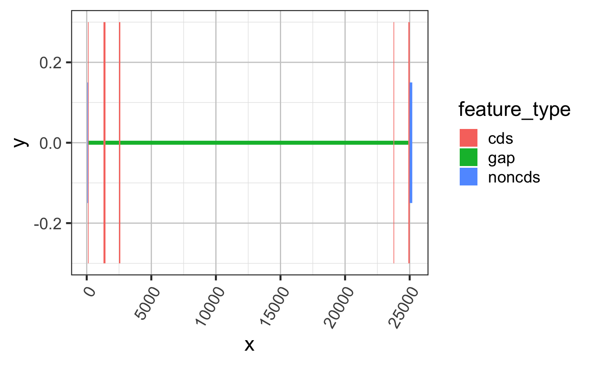
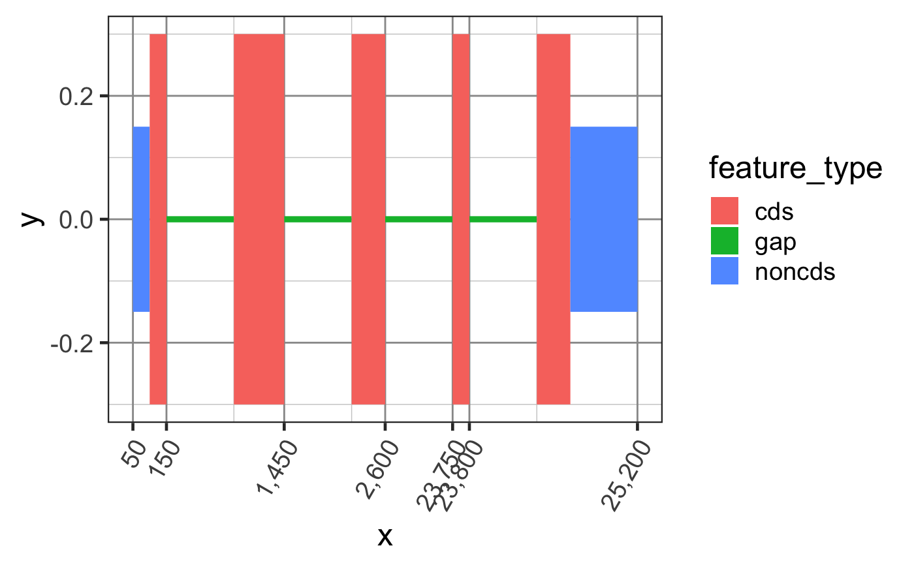
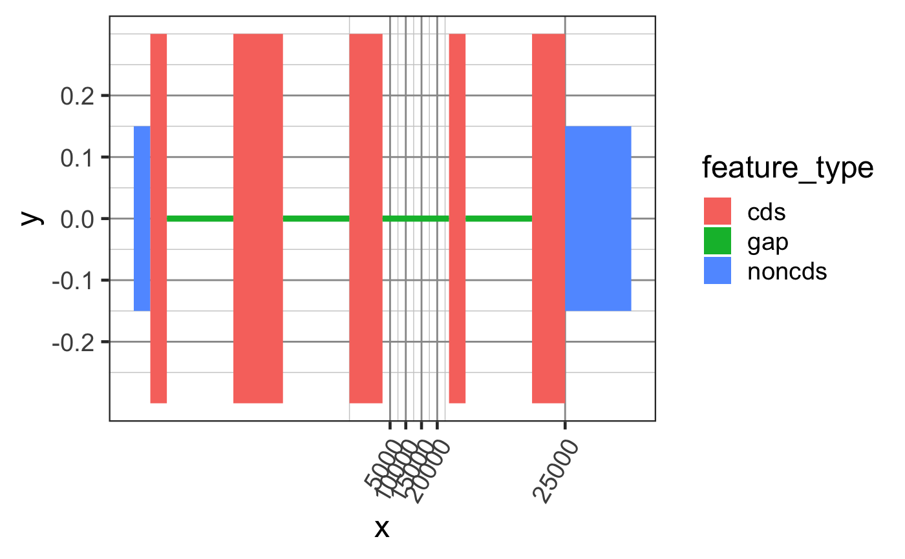
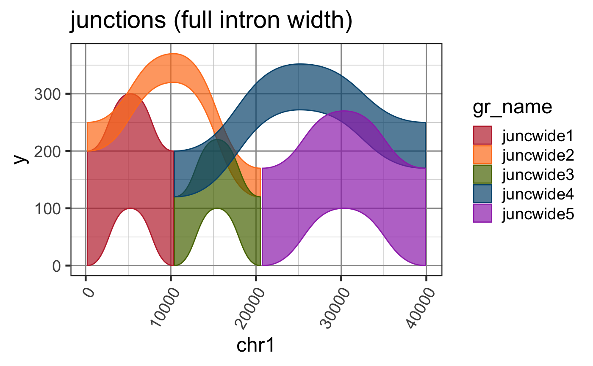

GRangesList to data.frame for ggplot2
grl2df( grl, keepGRvalues = TRUE, keepGRLvalues = FALSE, addGaps = TRUE, width = 0.6, widthV = c(exon = 0.6, cds = 0.6, noncds = 0.3, intron = 0.01, gap = 0.01, `NA` = 0.5), width_colname = c("subclass", "feature_type"), shape = c("rectangle", "junction"), baseline = NULL, scoreColname = "score", sampleColname = "sample_id", scoreArcMinimum = 200, scoreFactor = 1, scoreArcFactor = 0.5, doStackJunctions = TRUE, strandedScore = TRUE, ref2c = NULL, verbose = FALSE, ... )
| grl | GRangesList, or GRanges which will be converted to a GRangesList of length=1. |
|---|---|
| keepGRvalues, keepGRLvalues | logical indicating whether the output data.frame should include column values from GRangesList and GRanges, if available. |
| addGaps | logical indicating whether to add gap GRanges between
same-strand GRanges features within each GRangesList element.
When |
| width | numeric value of default width for features when
|
| widthV | numeric vector whose names are column values, using values
from the first available colname from |
| width_colname | when |
| shape | character string indicating whether input data should be processed as rectangular segments or splice junction arcs. |
| scoreColname, scoreArcMinimum, scoreFactor, scoreArcFactor | numeric values used to determine junction ribbon height, the minimum height of the arc above the starting y-axis values based upon the score, the scaling factor for score values, and the relative height of the arc above the starting y-axis values multiplied by the score. |
| sampleColname | character string indicating the column
containing biological sample identifier. This column is only
used when |
| doStackJunctions | logical indicating whether to stack junctions at the start and end of junctions sharing the same coordinate, in order of shortest to longest junction width. |
| ref2c | optional output from |
| verbose | logical indicating whether to print verbose output. |
| ... | additional arguments are passsed to relevant downstream functions. |
data.frame with x,y coordinates, and id which is used
to group polygon coordinates when used with ggplot2::geom_polygon()
or ggforce::geom_shape(). When shape="rectangle" the colnames
include grl_name which are names of the input GRangesList
names(grl); gr_name which are names of the GRanges entries; and
other columns from the input GRanges entries. When shape="junction"
the data includes two polygons per junction, intended to be used
with geom_diagonal_wide_arc() for each side in order to
produce a ribbon arc. The data also includes sample_id which is
helpful for keeping data distinct when derived from multiple
samples.
This function central to other plotting functions for GRanges and GRangesList objects. It currently has two modes:
shape="rectangle" is intended for
exons/peaks/regions, for example plotting exons in a gene structure,
or plotting ChIP-seq peaks.
shape="junction" is intended for splice junctions, and
returns two polygons that join junction ends with a the middle
point raised above both baselines. The polygon height is determined
by the score, resulting in visual reinforcement of the number
of splice junction reads, usually compared to the sequence read
coverage at adjacent exons.
An interesting argument is baseline which can be a named vector
of baseline y-axis values for each GRanges entry in the grl
GRangesList object. For example, it can be used to shift exons
up or down on the y-axis to make alternative exons more visibly
distinct. When used for Sashimi plots, it should also be
supplied to prepareSashimi() or exoncov2polygon() so
the coverages and splice junctions have consistent y-axis baselines.
When chromosome coordinates are compressed (to reduce the visible
width of introns) it affects the midpoint of splice junction arcs,
therefore ref2c should be supplied so the arcs are defined
using compresssed coordinates.
Other jam GRanges functions:
addGRLgaps(),
addGRgaps(),
annotateGRLfromGRL(),
annotateGRfromGR(),
assignGRLexonNames(),
closestExonToJunctions(),
combineGRcoverage(),
exoncov2polygon(),
findOverlapsGRL(),
flattenExonsBy(),
getFirstStrandedFromGRL(),
getGRLgaps(),
getGRcoverageFromBw(),
getGRgaps(),
jam_isDisjoint(),
make_ref2compressed(),
sortGRL(),
spliceGR2junctionDF(),
stackJunctions()
Other jam plot functions:
bgaPlotly3d(),
factor2label(),
gene2gg(),
jitter_norm(),
plotSashimi(),
prepareSashimi(),
stackJunctions()
Other splicejam core functions:
exoncov2polygon(),
gene2gg(),
make_ref2compressed(),
plotSashimi(),
prepareSashimi()
suppressPackageStartupMessages(library(GenomicRanges)); suppressPackageStartupMessages(library(jamba)); gr <- GRanges(seqnames=rep(c("chr1"), 7), ranges=IRanges::IRanges(start=c(50, 100, 1300, 2500, 23750, 24900, 25000), end=c(100, 150, 1450, 2600, 23800, 25000, 25200)), strand=rep("+", 7), feature_type=rep(c("noncds", "cds", "noncds"), c(1,5,1))); names(gr) <- jamba::makeNames(rep("exon", 7)); grldf <- grl2df(gr, addGaps=TRUE);#> Warning: failed to set names on the unlisted CompressedRleList object#> Warning: package ‘data.table’ was built under R version 3.6.2gg1 <- ggplot2::ggplot(grldf, ggplot2::aes(x=x, y=y, group=id)) + ggforce::geom_shape(ggplot2::aes(fill=feature_type)) + colorjam::theme_jam() print(gg1);## For fun, compress the introns and plot again. ## This method uses x-axis breaks at the exon boundaries. ref2c <- make_ref2compressed(gr); gg2 <- gg1 + ggplot2::scale_x_continuous(trans=ref2c$trans_grc) + colorjam::theme_jam() print(gg2);## data can also be plotted using coord_trans() ## the main difference is that x-axis breaks are defined before the ## transformation, which can result in non-optimal placement gg3 <- gg1 + coord_trans(x=ref2c$trans_grc) + colorjam::theme_jam(); print(gg3);## An example showing splice junction data data(test_junc_wide_gr); junc_wide_df <- grl2df(test_junc_wide_gr, shape="junction"); ggWide1 <- ggplot2::ggplot(junc_wide_df, ggplot2::aes(x=x, y=y, group=gr_name, fill=gr_name, color=gr_name)) + splicejam::geom_diagonal_wide_arc() + colorjam::theme_jam() + colorjam::scale_fill_jam(alpha=0.7) + colorjam::scale_color_jam() + ggplot2::xlab("chr1") + ggplot2::ggtitle("junctions (full intron width)") print(ggWide1);